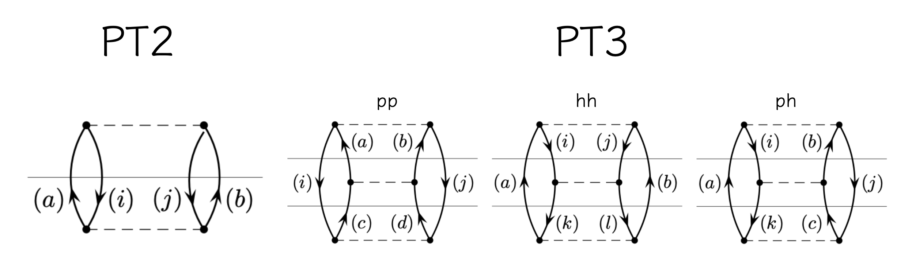
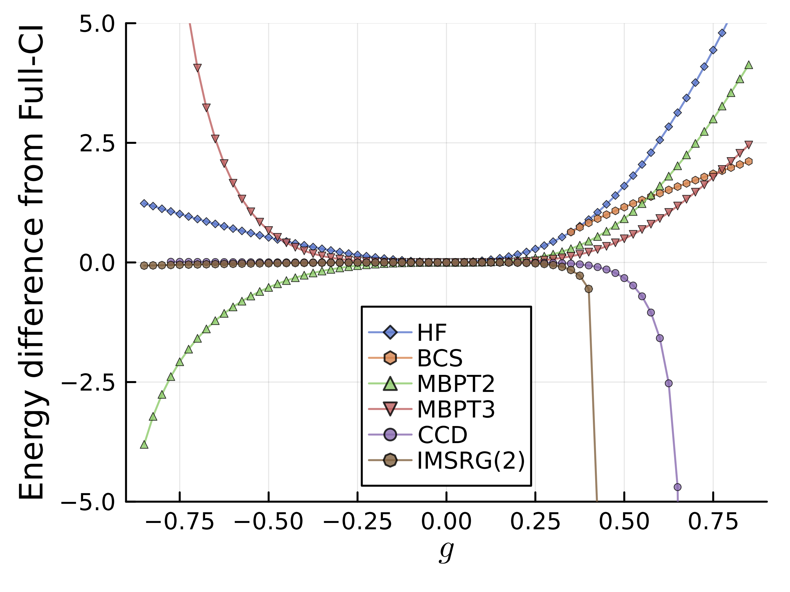

5. Many-Body Perturbation Theory (MBPT)
多体摂動論は、量子力学における摂動論の一つである。
量子化学ではとくにMøller–Plesset法などとしてひろく知られている。
より詳細な説明については、以下の参考文献(Coupled Clusterの文献でもあるので、この資料では"黒い本"と呼称する)などを参照:
Isaiah Shavitt and Rodney J. Bartlett, Many-Body Methods in Chemistry and Physics: MBPT and Coupled-Cluster Theory
原子核物理により即した解説としては、Morten Hjorth-Jensen氏の各種Lecture Noteが参考になる。GitHubのアカウントはこちら。
以下では、MBPTの一般論からスタートして、基底状態の2次・3次の補正項などの説明を行う。
ちなみに、PairingHamiltonian.jlでは、pairing Hamiltonianの性質から、多くの項が簡略化されることを積極的に活用して実装を行っていることも断っておく。
5.1. 多体摂動論の一般論
以下では、非縮退した基底状態を考え、以下のように、スレーター行列式の列で基底状態を表すことを考える:
\[
\begin{equation}
\left| \Psi_0 \right\rangle = \left| \Phi_0 \right\rangle
+ \sum^{\infty}_{m=1} C_m \left| \Phi_m \right\rangle
\end{equation}
\]
また、系の基底状態のうち、Hamiltonianの非摂動部分\(H_0\)に対して固有値\(E_0\)を持つ状態\(\left| \Phi_0 \right\rangle\)を考え、
\[
\begin{align}
\hat{H}_0 \left| \Phi_0 \right\rangle = E_0 \left| \Phi_0 \right\rangle
\end{align}
\]
これが、系の基底状態の主要部分であると考える。ここで、\( \langle \Phi_0 | \Phi_0 \rangle = \langle \Psi_0 | \Phi_0 \rangle = 1\)と規格化されているとする。
系のSchrödinger方程式
(5.1)\[
\begin{align}
\hat{H} \left| \Psi_0 \right\rangle = E \left| \Psi_0 \right\rangle
\end{align}
\]
に対して、左から\(\left\langle \Phi_0 \right|\)をかけると、
\[
\begin{align}
\left\langle \Phi_0 \right| \hat{H} \left| \Psi_0 \right\rangle
= E \left\langle \Phi_0 \right| \Psi_0 \rangle = E
\end{align}
\]
ここから、
\[
\begin{align}
\left\langle \Psi_0 \right| \hat{H}_0 \left| \Phi_0 \right\rangle
= E_0 \left\langle \Psi_0 | \Phi_0 \right\rangle = E_0
\end{align}
\]
を引いて、
\[
\begin{align}
\Delta E = E - E_0 = \left\langle \Phi_0 \right| \hat{V} \left| \Psi_0 \right\rangle
\end{align}
\]
この表式をみると、\(\Delta E\)は、摂動\(\hat{V}\)による基底状態のエネルギー変化を表していることがわかる。
とはいえ、真の基底状態\(\left| \Psi_0 \right\rangle\)は未知であるため、この表式のままでは、摂動\(\hat{V}\)による基底状態のエネルギー変化を具体的に計算することは難しい。
5.2. P-spaceとQ-space
そこで、基底状態\(\left| \Psi_0 \right\rangle\)を、摂動\(\hat{V}\)による影響を受ける部分と、受けない部分に分けることを考える。
\[\begin{split}
\begin{align}
\hat{P} & = \left| \Phi_0 \right\rangle \left\langle \Phi_0 \right| \\
\hat{Q} & = 1 - \hat{P} = \sum^{\infty}_{m=1} \left| \Phi_m \right\rangle \left\langle \Phi_m \right|
\end{align}
\end{split}\]
この射影演算子を用いて、基底状態を書き換えると...
\[
\begin{align}
\left| \Psi_0 \right\rangle
= \left( \hat{P} + \hat{Q} \right) \left| \Psi_0 \right\rangle
= \left| \Phi_0 \right\rangle + \hat{Q} \left| \Psi_0 \right\rangle
\end{align}
\]
\(\omega \left| \Psi_0 \right \rangle\)から(5.1)の両辺を引くと、
\[\begin{split}
\begin{align}
& \left(\omega - \hat{H} \right) \left| \Psi_0 \right\rangle
= \left( \omega - E \right) \left| \Psi_0 \right\rangle \\
\iff & \left( \omega - \hat{H}_0 \right) \left| \Psi_0 \right\rangle
= \left( \omega -E + \hat{V} \right) \left| \Psi_0 \right\rangle
\end{align}
\end{split}\]
形式的に
\[
\begin{align}
\left| \Psi_0 \right\rangle = \frac{1}{\left( \omega - \hat{H}_0 \right)} \left( \omega - E + \hat{V} \right) \left| \Psi_0 \right\rangle
\end{align}
\]
\(\hat{Q}\)と\(\frac{1}{\left( \omega - \hat{H}_0 \right)}\)は可換に取ることができる:
\[
\begin{align}
\hat{Q} \frac{1}{\left( \omega - \hat{H}_0 \right)} = \frac{1}{\left( \omega - \hat{H}_0 \right)} \hat{Q}
= \frac{\hat{Q}}{\left( \omega - \hat{H}_0 \right)}
\end{align}
\]
したがって、
\[
\begin{align}
\left| \Psi_0 \right\rangle =
\left| \Phi_0 \right \rangle + \frac{\hat{Q}}{\left( \omega - \hat{H}_0 \right)} \left( \omega - E + \hat{V} \right) \left| \Psi_0 \right\rangle
\end{align}
\]
依然として、元のSchrödinger方程式の形式的な変形であるが、iterativeに解けそうな表式にはなった。
最も簡単な選択肢は\(\Psi_0 = \Phi_0\)に取ることで:
\[
\begin{align}
\left| \Psi_0 \right\rangle =
\sum^{\infty}_{i=0} \left\{ \frac{\hat{Q}}{( \omega - \hat{H}_0 )} (\omega - E + \hat{V}) \right\}^i \left| \Phi_0 \right\rangle
\end{align}
\]
となる。また、基底状態のエネルギーに対する摂動的な補正は以下のように書ける:
\[
\begin{align}
\Delta E = \left\langle \Phi_0 \right| \hat{V} \left| \Psi_0 \right\rangle
= \sum^{\infty}_{i=0} \left\langle \Phi_0 \right| \hat{V} \left\{ \frac{\hat{Q}}{( \omega - \hat{H}_0 )} (\omega - E + \hat{V}) \right\}^i \left| \Phi_0 \right\rangle
\end{align}
\]
実際には\(\omega, E\)などが不定であるが、
Brilluoin-Wigner (\(\omega = E\))やRayleigh-Schrödinger (\(\omega = E_0\))などの選択肢がある。
後者の元で、エネルギーの補正項を考えると、
\[
\begin{align}
\Delta E & =
\sum^{\infty}_{i=0} \left\langle \Phi_0 \right| \hat{V} \left\{ \frac{\hat{Q}}{( E_0 - \hat{H}_0 )}
(\hat{V} - \Delta E ) \right\}^i \left| \Phi_0 \right\rangle
\end{align}
\]
\(\hat{Q}\)は\(\hat{H}_0\)と可換で\(\Delta E\)は定数であることを使うと、
\[
\begin{align}
\Delta E & = \bra{\Phi_0}
\left(
\hat{V} + \hat{V} \frac{\hat{Q}}{E_0 - \hat{H}_0} \hat{V}
+ \hat{V} \frac{\hat{Q}}{E_0 - \hat{H}_0} (\hat{V} - \Delta E)
\frac{\hat{Q}}{E_0 - \hat{H}_0} \hat{V} + \cdots
\right)
\ket{\Phi_0}
\end{align}
\]
Goldstonのlinked-diagram theoryにより、エネルギーの補正項はDiagramaticに整理することができる。
有限系の場合は、寄与する項が限られ、Hartree-Fockをreferenceとした場合の2次(PT2)・3次(PT3)の補正項は以下のようになる:
\[\begin{split}
\begin{align}
\Delta E^{(2)} &
= \frac{1}{4} \sum_{ij \leq F} \sum_{ab > F} \frac{\bra{ij} \hat{V} \ket{ab} \bra{ab} \hat{V} \ket{ij}}{ \epsilon^{ab}_{ij}} \\
\Delta E^{(3)}_{pp} &
= \frac{1}{8} \sum_{ij \leq F} \sum_{abcd > F} \frac{\bra{ij} \hat{V} \ket{ab} \bra{ab} \hat{V} \ket{cd} \bra{cd} \hat{V} \ket{ij}}{
\epsilon^{ab}_{ij} \epsilon^{cd}_{ij}} \\
\Delta E^{(3)}_{hh} &
= \frac{1}{8} \sum_{ijkl \leq F} \sum_{ab > F} \frac{\bra{ij} \hat{V} \ket{ab} \bra{kl} \hat{V} \ket{kl} \bra{kl} \hat{V} \ket{ij}}{
\epsilon^{ab}_{ij} \epsilon^{ab}_{kl}} \\
\Delta E^{(3)}_{ph} &
= - \sum_{ijk \leq F} \sum_{abc > F} \frac{\bra{ij} \hat{V} \ket{ab} \bra{kb} \hat{V} \ket{ic} \bra{ac} \hat{V} \ket{kj}}{
\epsilon^{ab}_{ij} \epsilon^{ac}_{kj}}
\end{align}
\end{split}\]

※黒い本の5章に詳細な結果が書かれている。
相互作用が強いとき(≒核力など)、摂動の次数を上げても必ずしも厳密解に近い結果が得られる訳では無い点にも注意が必要である。
5.3. pairing Hamiltonianの場合のPT2&3の表式
pairing Hamiltonianの(縮退した軌道間にのみ相互作用がある)場合、上記の\(\Delta E^{(3)}_{ph}\)の項が落ちる。
PT3ではこの項の評価が最も大変なので、globalなpairing Hamiltonianの場合は、
すべての相互作用の強さが\(-g\)であることも手伝って、ぐっと計算が簡単になる。
(5.2)\[\begin{split}
\begin{align}
\Delta E^{(2)} &
= \frac{1}{4} \sum_{i \leq F} \sum_{a > F} \frac{(-g)^2}{ \epsilon^{a\bar{a}}_{i\bar{i}}} \\
\Delta E^{(3)}_{pp} &
= \frac{1}{8} \sum_{i \leq F} \sum_{ac > F} \frac{(-g)^3}{\epsilon^{a\bar{a}}_{i\bar{i}} \epsilon^{c\bar{c}}_{i\bar{i}}} \\
\Delta E^{(3)}_{hh} &
= \frac{1}{8} \sum_{ik \leq F} \sum_{a > F} \frac{(-g)^3}{
\epsilon^{a\bar{a}}_{i\bar{i}} \epsilon^{a\bar{a}}_{k\bar{k}}} \\
\Delta E^{(3)}_{ph} & = 0
\end{align}
\end{split}\]
あり得る中間状態についてループを取るだけで、簡単に計算ができる。
より一般的な場合の実装についても、著者のJuliaパッケージであるNuclearToolkit.jlなどに実装例があるので、参考にされたい。
5.4. 結果の考察
厳密解(Full-CI)との差分をみながら、結果を考察してみよう。

\(g\)の絶対値が小さい(相互作用が弱く摂動的な領域)では、PT2・PT3とも、とても良く系の基底状態を説明している。
また、\(g\)が大きく配位が混ざることを好む領域では、次数を上げた摂動論により相関をよく取り込めていることもわかる。
一方で、\(g\)が負に大きい領域では、摂動論の収束が悪く、PT3は特にその傾向が強いことも見て取れる。
5.5. 発展的な注
MBPTは、(sub-shell closed核などの)基底状態を計算するための強力な手法である。
より一般に、open-shell系を考える場合には、Effective interactionを導出する応用や、Bogoliubov MBPT (BMBPT)などの拡張も考えられる。
BMBPTでは、比較的少ない計算量ながらSCGFのADC(2)やIMSRG(2)などと高々2%程度の差で基底状態エネルギーを再現できることが知られている。
A. Tichai et al., Phys. Lett. B 786, 195 (2018)などが参考になる。